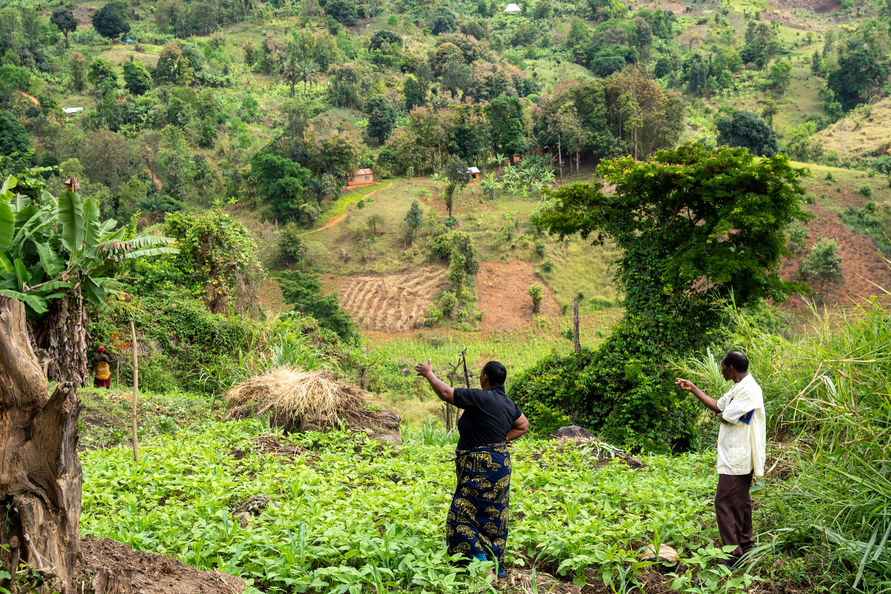
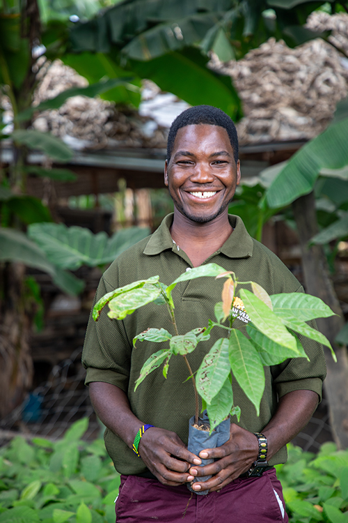

0Years of visionary conservation leadership


Business and conservation working together
In the heart of Tanzania, the lands of the Kilombero Valley are vital for both agricultural production and wildlife habitat. See how AWF is working with local stakeholders to ensure a future that promotes prosperity while strengthening conservation.
View the video